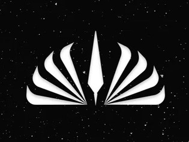

The New Timeline
Select an Era for more information.
*Warning Spoilers Ahead*
Dawn of the Jedi
This is chronologically the first era, but it is also one of the newest, as it was just revealed in the Celebration. As yet, it is unexplored, and little is known about it as it is so far removed from the rest of them. Taking place roughly 25,000 years before any other Star Wars story, the Dawn of the Jedi deals with a time when the Jedi themselves were still learning how to wield their power. Star Wars Celebration announced a new film that will be set in this time period. Directed by James Mangold, this upcoming story will center on the very first Jedi Knights, giving more insight into this era.
The Old Republic
This second era is still removed from most Star Wars content and has no film or show set in the time period, nor was one announced. However, The Old Republic era is featured in the Star Wars: Knights of the Old Republic video game and its sequels. Still, 4,000 years before the earliest film, the Old Republic era is known for its sheer number of force-users. With the mythologies of Sith and Jedi being a defining feature of the time, this era is more fantasy-like than the more familiar ones.
The High Republic
Like those before, The High Republic era still doesn't cover anything already released on screen but novels. However, The High Republic will be the setting for the upcoming Disney+ series The Acolyte. The limited information about the series indicates that it will be a mere 100 years before the prequel series and focus on Jedi as they face the emerging threat of the dark side. With the Jedi at full power, the series offers a new perspective on the organization. Despite the brewing darkness, The High Republic era is remembered as a largely peaceful time, but clearly, there is more to the story.
Fall of the Jedi
The Fall of the Jedi is the earliest era to make it to screens. Previously referred to as the Clone Wars era or simply the prequel era, this time period incorporates the events leading to Order 66. From Qui-Gon Jinn's (Liam Neeson) discovery of young Anakin Skywalker (Jake Lloyd/Hayden Christensen), who he believed to be the chosen one, to the end of the Clone Wars and the founding of the Empire, this era is familiar to Star Wars fans. It not only includes the prequel films of the Skywalker Saga: The Phantom Menace, The Attack of the Clones, and The Revenge of the Sith, but also the animated The Clone Wars series. As the title indicates, this timeframe is remembered for its tragic ending, where the Jedi are decimated, and the few survivors are forced into hiding.
Reign of the Empire
This one is an ominous era but important to the story. As the title suggests, it is defined by the Empire's total and unforgiving control over the galaxy. With any opposition scattered and far outnumbered, Darth Sidious ruled the galaxy with his loyal apprentice Vader. During this time, the Empire replaced Clone Troopers with Storm Troopers, built the Death Star, and generally squelched the hopes of galactic citizens. It's perhaps the darkest time in Star Wars history, but it has provided good stories, with The Bad Batch, Obi-Wan Kenobi, Solo: A Star Wars Story, Andor, Rebels, and Rouge One: A Star Wars Story all occurring in this timeframe.
Age of the Rebellion

The introduction to Star Wars is set during the Age of the Rebellion. This era is made up of the four years seen in the original trilogy, meaning that A New Hope, The Empire Strikes Back, and The Return of the Jedi fall into the Age of the Rebellion. While the distinction between Rogue One being in the Reign of the Empire and A New Hope moving into the Age of the Rebellion may seem odd, considering the two stories are so close together, it does make sense. A New Hope is a turning point for the Rebellion. The rebels are always at a disadvantage compared to the all-powerful Empire, but, in part because of the Rogue One team, the Rebellion manages to provide a viable threat to the Empire in A New Hope. And that distinction changes the era. During the Age of Rebellion, Leia Organa (Carrie Fisher), Luke Skywalker (Mark Hamill), Han Solo (Harrison Ford), and many more heroes topple the Empire and return freedom to the galaxy.
The New Republic

The Age of the Rebellion flows into The New Republic era as the galaxy rebuilds after the Empire's control. The name comes from the government that arises after the Empire, attempting to return to the Galactic Republic system. Though still plagued by Imperial loyalists, the New Republic strives to create a better galaxy. Yet The Mandalorian shows that this new governing system has its issues. This era deals with restoring a war-torn galaxy and the transition from Empire to First Order. The exploration of this time frame is relatively new and focused on the early part of the era, with The Mandalorian, The Book of Boba Fett, the upcoming shows Ahsoka and The Skeleton Crew, and eventually, a crossover film directed by Dave Filoni.
The Rise of the First Order
Exactly as it sounds, this era is the story of the sequel trilogy. Though when it starts is unclear as the early part of the era isn't explored, this time period includes Snoke's (Andy Serkis) reign, Kylo Ren's (Adam Driver) betrayal, and the formation of the Resistance. The Rise of the First Order era ends when Rey (Daisy Ridley) and Kylo manage to defeat the returned Palpatine (Ian McDiarmid), restoring peace to the galaxy. Obviously, it consists of The Force Awakens, The Last Jedi, and The Rise of Skywalker and would include the animated show Resistance.
New Jedi Order
Currently, the defeat of the First Order is the last event on the timeline, but that will soon change. An upcoming film featuring Daisy Ridley's Rey was among the recent announcements. Set fifteen years after The Rise of Skywalker, this new film will introduce a brand-new era entitled New Jedi Order. After the recent destruction, the Jedi Order is still in turmoil as Rey attempts to rebuild it. However, nothing else is known about this era for the time being.